Mobili e armadietti sul pianerottolo: quando l'occupazione è illegittima
Tenere un armadietto o un mobile sul pianerottolo è un'abitudine diffusa, ma non sempre lecita. La giurisprudenza consolidata della Cassazione ricorda che l'uso delle parti comuni …

Ponteggi nel cortile del vicino: l'indennità dovuta al condominio
Chi deve eseguire lavori sul proprio edificio può accedere al fondo del vicino per installare i ponteggi, ma a quali condizioni economiche? Il Tribunale di Napoli, con la sentenza …

Stalking e capacità di intendere: la perizia psichiatrica è obbligatoria
Con la sentenza penale n. 9095/2026 la Corte di Cassazione ha annullato una condanna per stalking per vizio di motivazione. In presenza di documentazione sanitaria che attesta dist…

Oltraggio a pubblico ufficiale: resta escluso il non punibile per tenuità
Con la sentenza n. 186/2026 la Corte costituzionale ha confermato che per l'oltraggio a pubblico ufficiale non opera la causa di non punibilità per particolare tenuità del fatto. U…

Convocazione dell'assemblea: quando l'ordine del giorno è valido
Con l'ordinanza n. 1107/2026 la Cassazione precisa che l'ordine del giorno dell'assemblea condominiale è valido se indica gli argomenti in modo chiaro ed essenziale, senza descrizi…
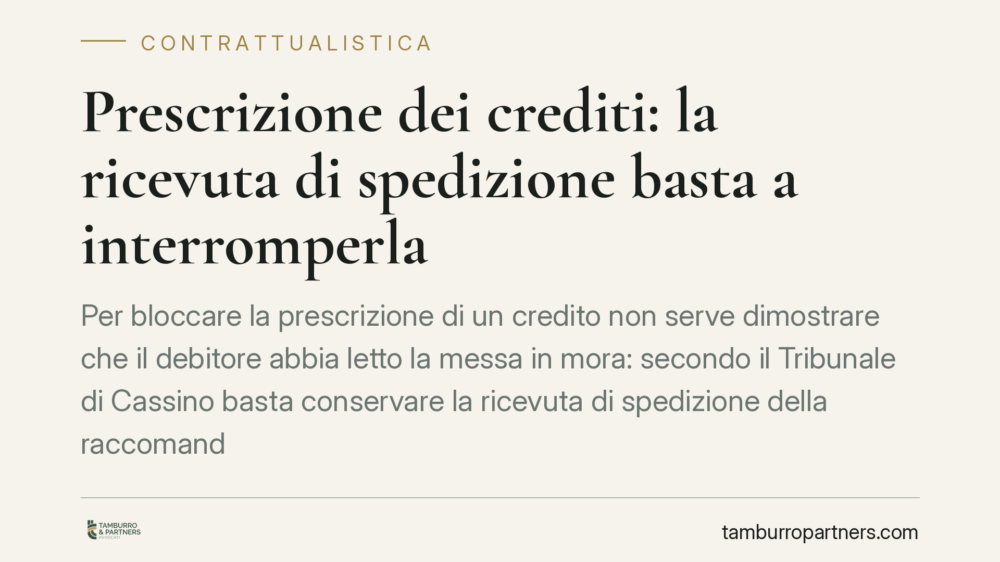
Prescrizione dei crediti: la ricevuta di spedizione basta a interromperla
Per bloccare la prescrizione di un credito non serve dimostrare che il debitore abbia letto la messa in mora: secondo il Tribunale di Cassino basta conservare la ricevuta di spediz…
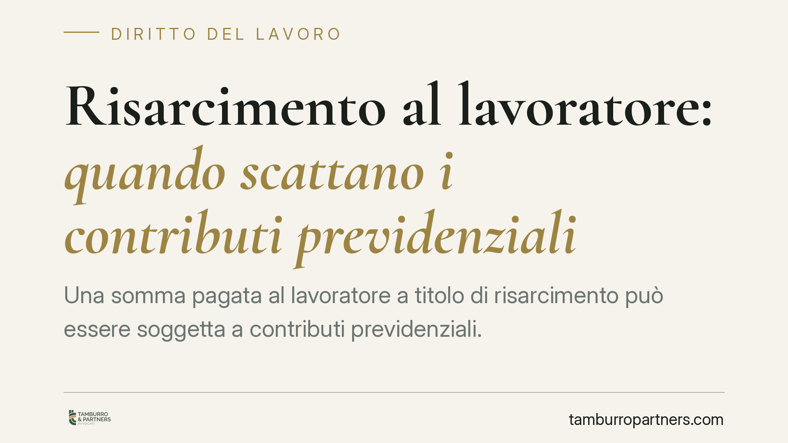
Risarcimento al lavoratore: quando scattano i contributi previdenziali
Una somma pagata al lavoratore a titolo di risarcimento può essere soggetta a contributi previdenziali. La Cassazione ribadisce un principio consolidato: ciò che rileva è la funzio…
Registrare le telefonate del genitore per provare un tradimento: cosa dice la Cassazione
Spiare le telefonate di un genitore per raccogliere prove di una relazione extraconiugale non è lecito. La Corte di Cassazione, con la sentenza 9222/2026, chiarisce che tale condot…
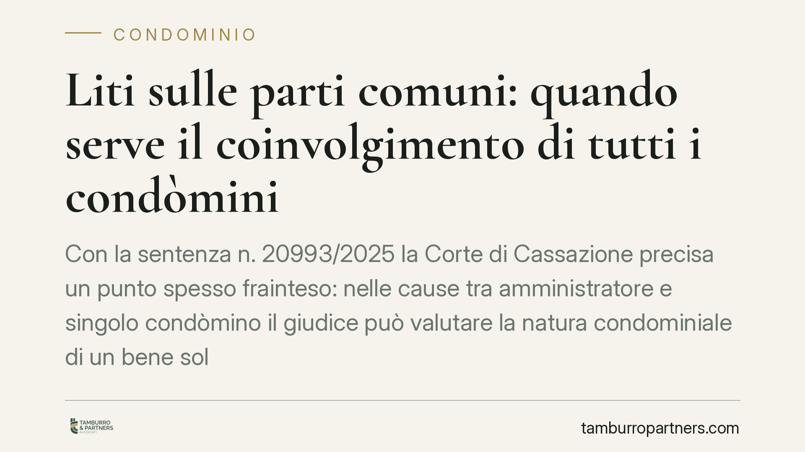
Liti sulle parti comuni: quando serve il coinvolgimento di tutti i condòmini
Con la sentenza n. 20993/2025 la Corte di Cassazione precisa un punto spesso frainteso: nelle cause tra amministratore e singolo condòmino il giudice può valutare la natura condomi…
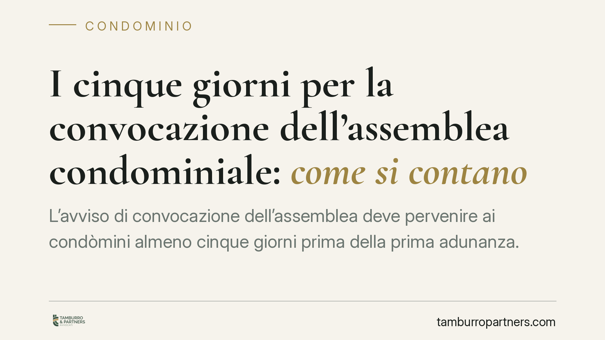
I cinque giorni per la convocazione dell'assemblea condominiale: come si contano
L'avviso di convocazione dell'assemblea deve pervenire ai condòmini almeno cinque giorni prima della prima adunanza. Ma come si contano quei giorni? È un termine libero, va calcola…
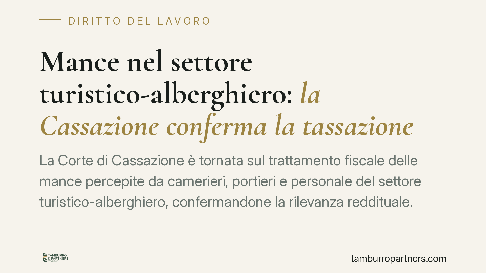
Mance nel settore turistico-alberghiero: la Cassazione conferma la tassazione
La Corte di Cassazione è tornata sul trattamento fiscale delle mance percepite da camerieri, portieri e personale del settore turistico-alberghiero, confermandone la rilevanza redd…
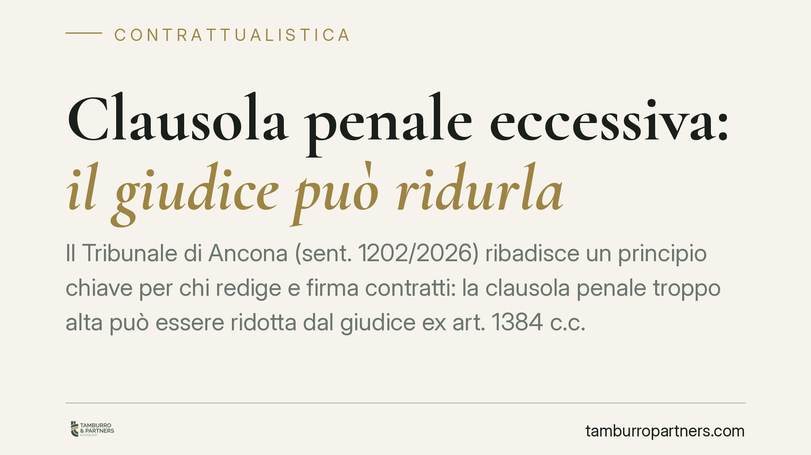
Clausola penale eccessiva: il giudice può ridurla
Il Tribunale di Ancona (sent. 1202/2026) ribadisce un principio chiave per chi redige e firma contratti: la clausola penale troppo alta può essere ridotta dal giudice ex art. 1384 …
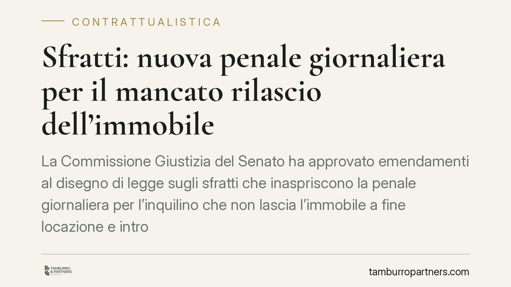
Sfratti: nuova penale giornaliera per il mancato rilascio dell'immobile
La Commissione Giustizia del Senato ha approvato emendamenti al disegno di legge sugli sfratti che inaspriscono la penale giornaliera per l'inquilino che non lascia l'immobile a fi…
Fine della relazione e recupero dei soldi: cosa dice la legge
Quando una relazione finisce, resta spesso una domanda scomoda: i soldi versati al partner si possono recuperare? La giurisprudenza distingue tra spese per la vita comune, di regol…
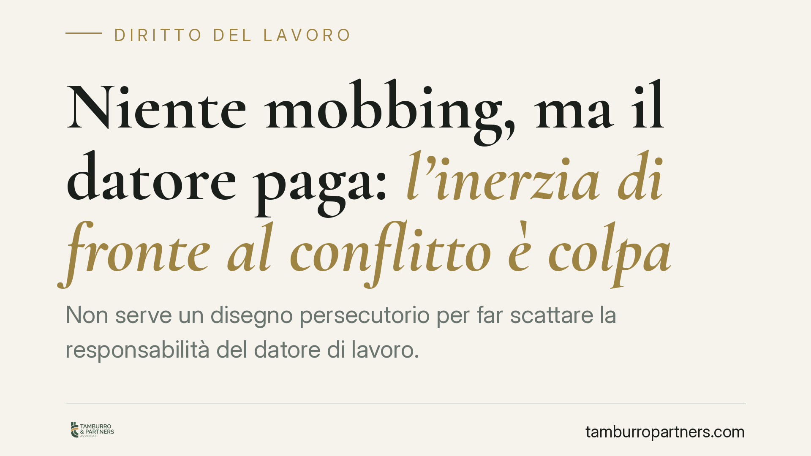
Niente mobbing, ma il datore paga: l'inerzia di fronte al conflitto è colpa
Non serve un disegno persecutorio per far scattare la responsabilità del datore di lavoro. Secondo un consolidato orientamento della Sezione Lavoro della Cassazione, l'azienda o l'…
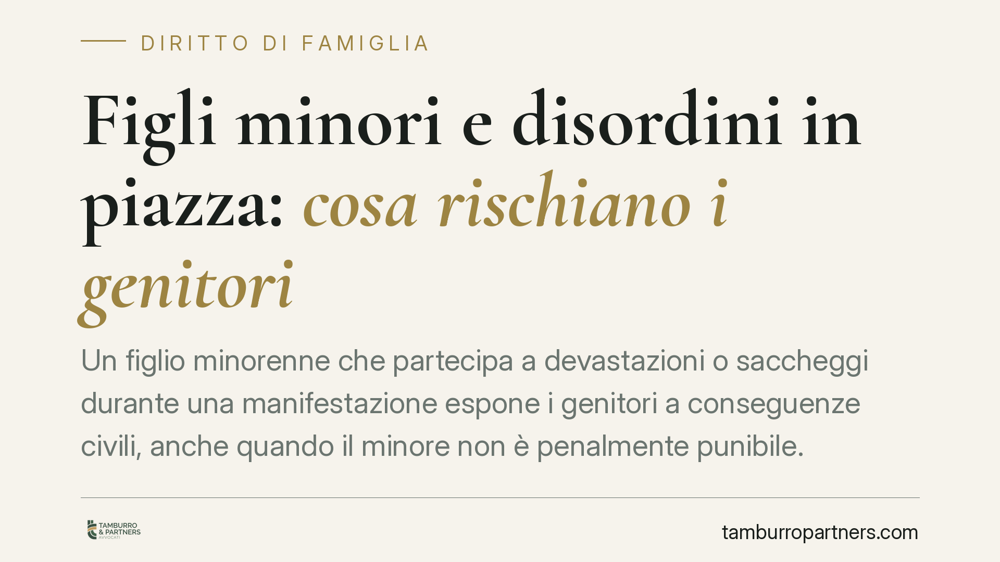
Figli minori e disordini in piazza: cosa rischiano i genitori
Un figlio minorenne che partecipa a devastazioni o saccheggi durante una manifestazione espone i genitori a conseguenze civili, anche quando il minore non è penalmente punibile. Le…
Interrogatorio preventivo e misure cautelari: è diritto personale di ogni indagato
Secondo una recente pronuncia delle Sezioni Unite, il diritto all'interrogatorio prima dell'applicazione di una misura cautelare è personale. La deroga ammessa per un indagato peri…
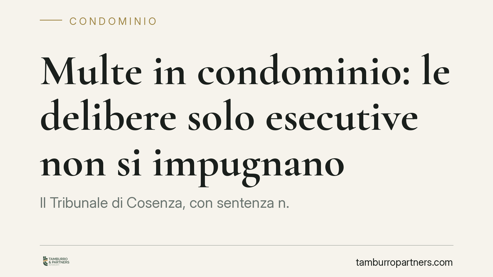
Multe in condominio: le delibere solo esecutive non si impugnano
Il Tribunale di Cosenza, con sentenza n. 960, ha stabilito che la delibera con cui l'assemblea si limita a dare mandato all'amministratore per recuperare una multa non è impugnabil…
Stalking via WhatsApp: anche le chiamate possono aggravare la pena
Non solo i messaggi: anche le chiamate vocali effettuate tramite WhatsApp possono assumere rilievo nello stalking commesso con strumenti informatici o telematici. La questione tocc…
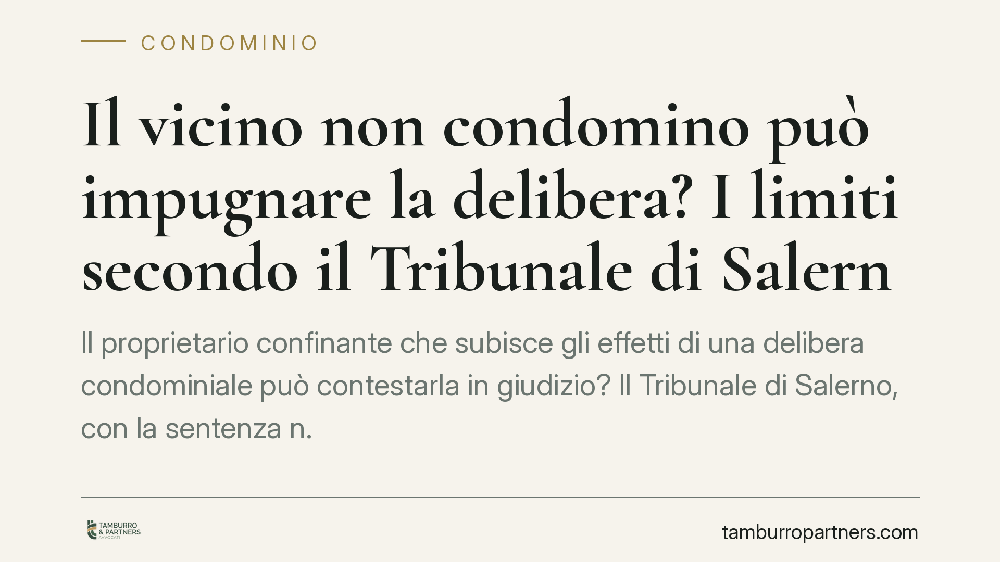
Il vicino non condomino può impugnare la delibera? I limiti secondo il Tribunale di Salerno
Il proprietario confinante che subisce gli effetti di una delibera condominiale può contestarla in giudizio? Il Tribunale di Salerno, con la sentenza n. 3619/2026, traccia un confi…
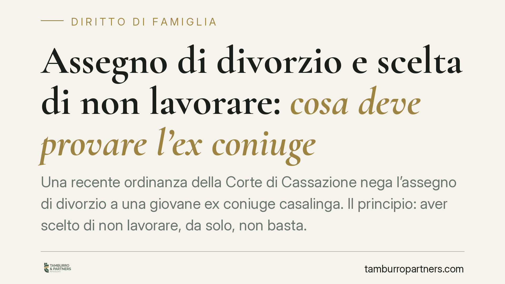
Assegno di divorzio e scelta di non lavorare: cosa deve provare l'ex coniuge
Una recente ordinanza della Corte di Cassazione nega l'assegno di divorzio a una giovane ex coniuge casalinga. Il principio: aver scelto di non lavorare, da solo, non basta. Occorr…
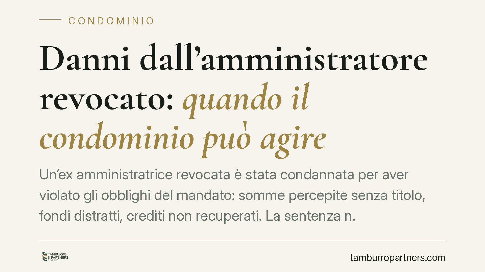
Danni dall'amministratore revocato: quando il condominio può agire
Un'ex amministratrice revocata è stata condannata per aver violato gli obblighi del mandato: somme percepite senza titolo, fondi distratti, crediti non recuperati. La sentenza n. 1…
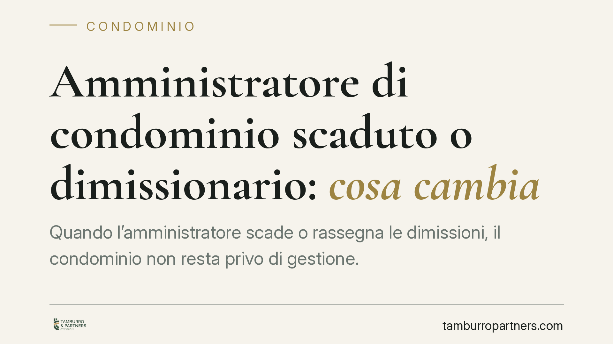
Amministratore di condominio scaduto o dimissionario: cosa cambia
Quando l'amministratore scade o rassegna le dimissioni, il condominio non resta privo di gestione. Secondo l'orientamento consolidato della Cassazione, chi cessa dalla carica resta…
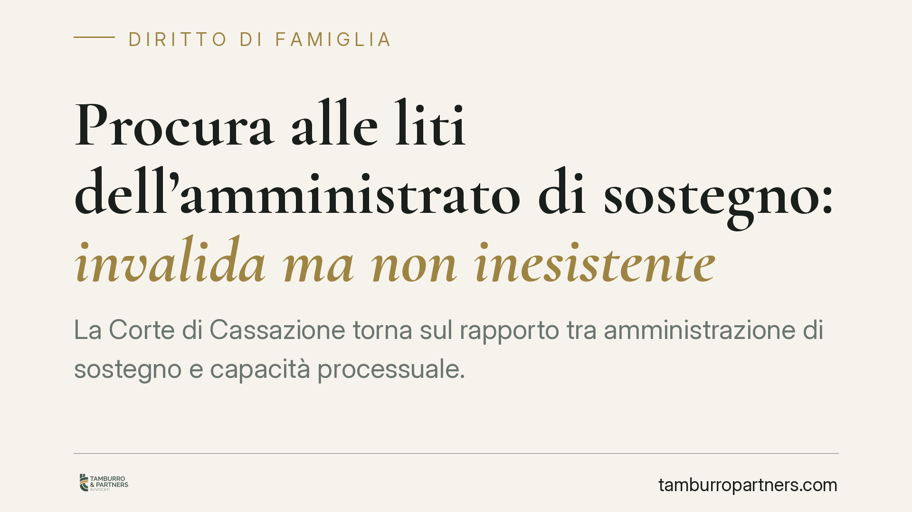
Procura alle liti dell'amministrato di sostegno: invalida ma non inesistente
La Corte di Cassazione torna sul rapporto tra amministrazione di sostegno e capacità processuale. La procura alle liti sottoscritta dal beneficiario senza l'autorizzazione del giud…
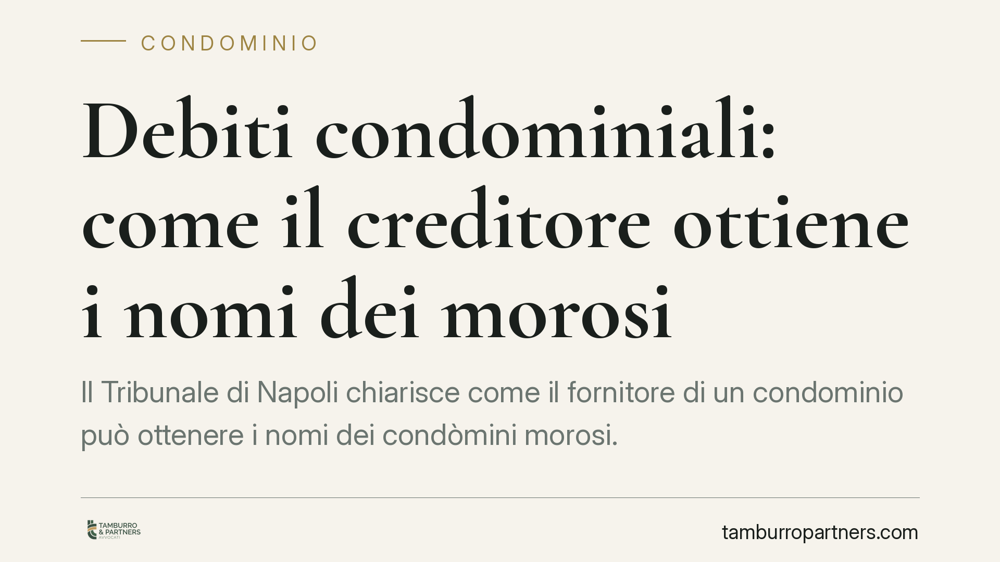
Debiti condominiali: come il creditore ottiene i nomi dei morosi
Il Tribunale di Napoli chiarisce come il fornitore di un condominio può ottenere i nomi dei condòmini morosi. La strada non è il ricorso d'urgenza, ma l'azione diretta contro l'amm…
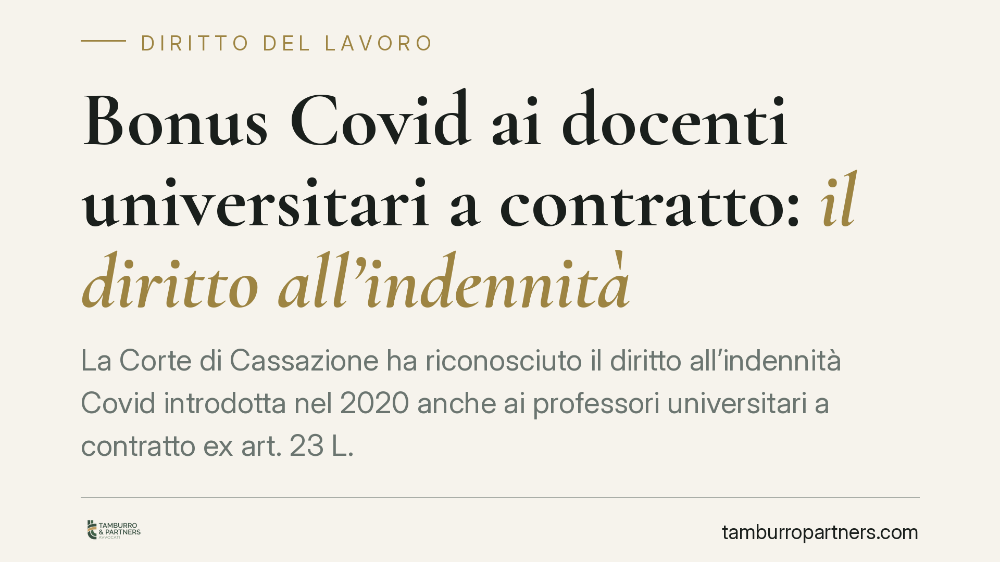
Bonus Covid ai docenti universitari a contratto: il diritto all'indennità
La Corte di Cassazione ha riconosciuto il diritto all'indennità Covid introdotta nel 2020 anche ai professori universitari a contratto ex art. 23 L. 240/2010, quando inquadrabili c…
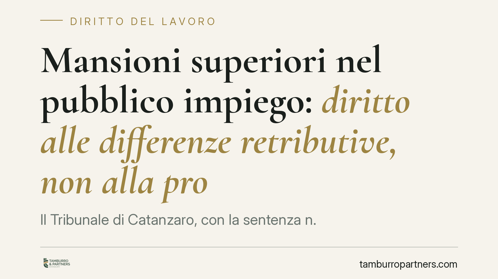
Mansioni superiori nel pubblico impiego: diritto alle differenze retributive, non alla promozione
Il Tribunale di Catanzaro, con la sentenza n. 552/2026, ribadisce un principio consolidato ma ancora fonte di contenzioso: nel pubblico impiego privatizzato lo svolgimento di mansi…
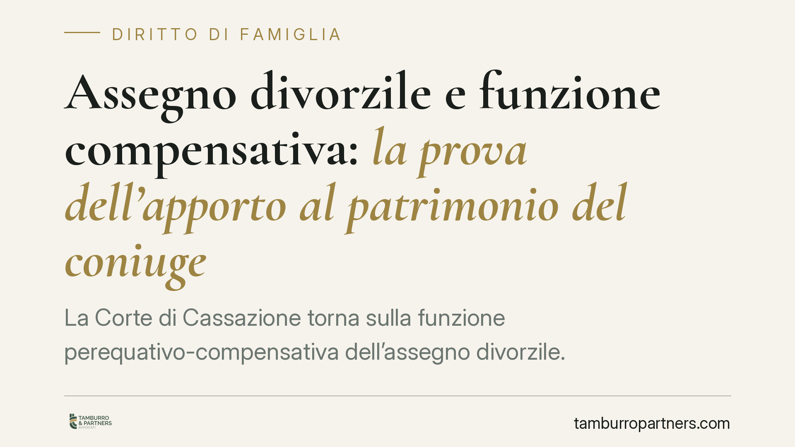
Assegno divorzile e funzione compensativa: la prova dell'apporto al patrimonio del coniuge
La Corte di Cassazione torna sulla funzione perequativo-compensativa dell'assegno divorzile. Secondo un recente orientamento, il contributo del coniuge al patrimonio dell'altro può…
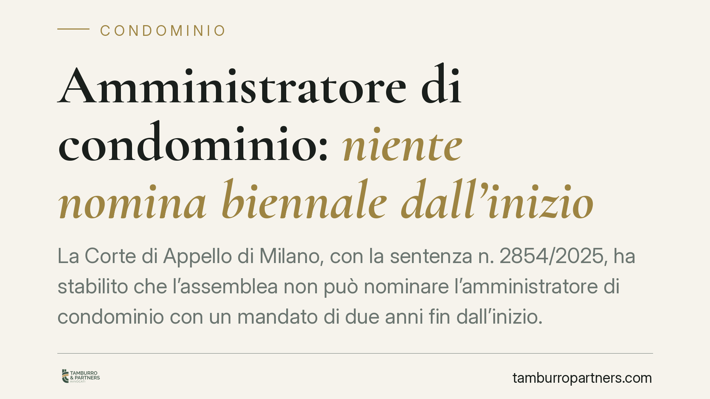
Amministratore di condominio: niente nomina biennale dall'inizio
La Corte di Appello di Milano, con la sentenza n. 2854/2025, ha stabilito che l'assemblea non può nominare l'amministratore di condominio con un mandato di due anni fin dall'inizio…

Decurtazioni retributive durante le ferie: il criterio della marginalità
Alcune voci della retribuzione possono essere ridotte quando il lavoratore è in ferie. La giurisprudenza ammette la decurtazione solo se la perdita è marginale, con una precisazion…